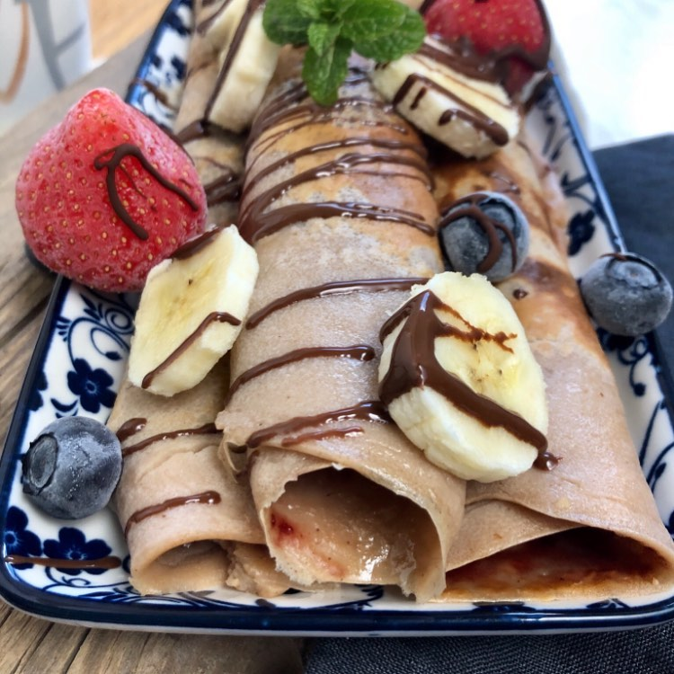

Polievky 🍲 podľa @jemezdravo.sk — Normy Jedál
🎈SÚŤAŽ🎈 Milí moji Instagramoví priatelia 🥳. Až do času, kedy vyjde moja druhá kuchárska kniha 📕 (alebo do odvolania) plná skvelých zdravších, ale hlavne aj bezlepkovo-bezlaktózových receptov, rozhodla som sa, že každý druhý/tretí deň jeden z vás získa jednu kuchársku knihu. Tú, ktorú som vydala pred viac ako 2,5 rokmi 🎁📗 - “Intolerancie s chuťou - viac ako 100 bezlepkovo-bezlaktózových receptov”😊
Ak ju chcete získať stačí, aby ste každý deň (alebo v ten, v ktorý sa do žrebovania chcete zapojiť) lajkli fotku a napísali pod moj post/alebo posty, čokoľvek. Či to bude smailík, komentár, pozdrav, milé slová, to nechám na vás 😊❤️.
Žrebovať budem večer o 22:00, v utorok, piatok a nedeľu a knižky budem posielať vždy 1x týždenne spolu 😊.
Zapojte aj svojich kamarátov, blízkych, budete mať vačšiu šancu 😉❤️
Ak si prosíte recept na tieto gaštanové palacinky píšte, dám ho do komentára, lebo tu sa to už asi nezmestí 😁😘
#jemezdravo #jemezdravo.sk #zdraverecepty #chutnerecepty #dobrejedlo #intolerancieschutou #bezlepku #bezlaktozy #dezert #recept #jedlo #obed #vecera #bezlepkove #polievky #recepty #glutenfree #dairyfree #senzaglutine #instafood #bloger #foodintolerance #mojeranajky #foodbloger #glutenfrei #sutaz #soutez #bratislava #slovakia❤️